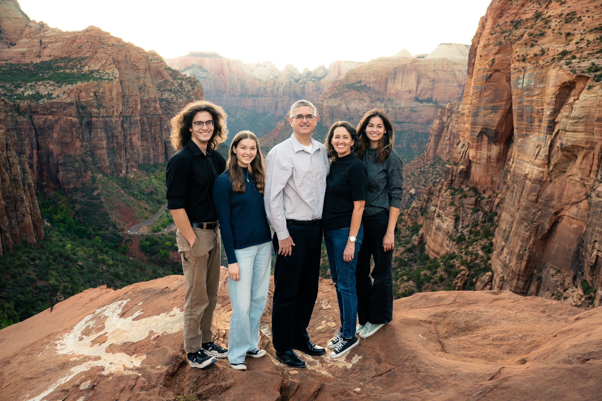
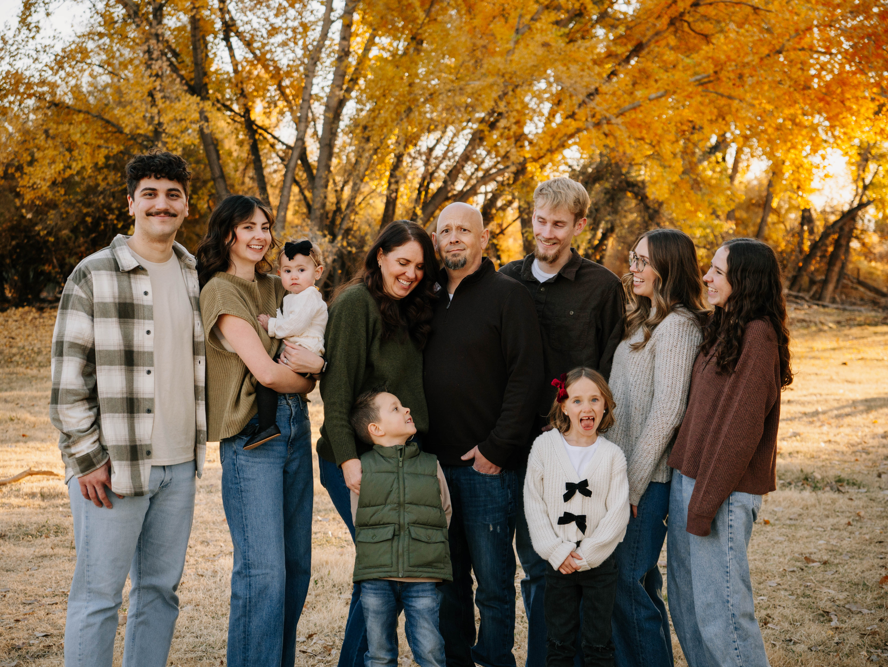
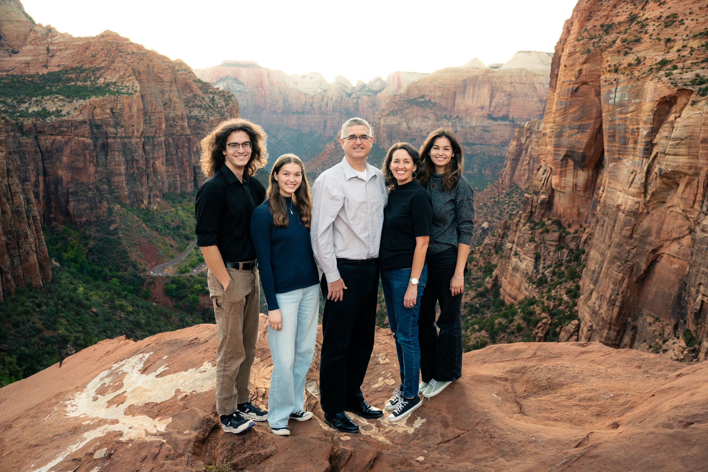
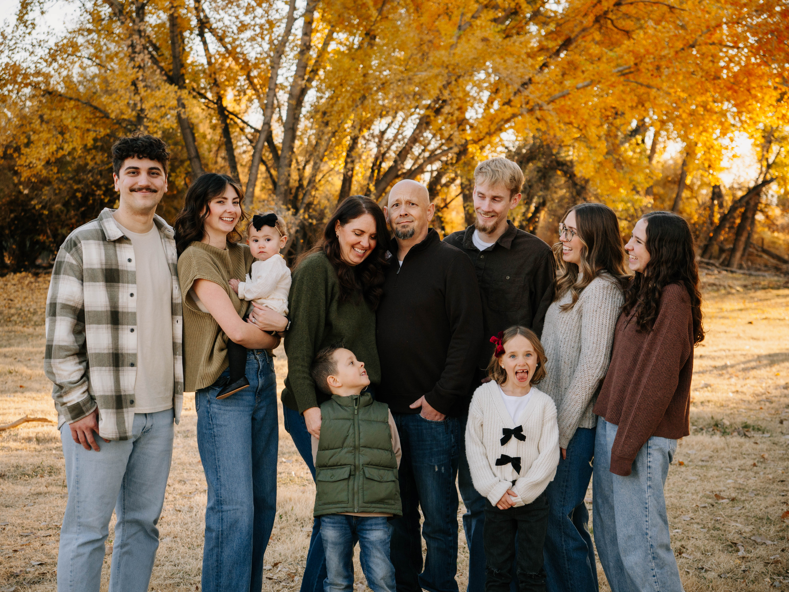
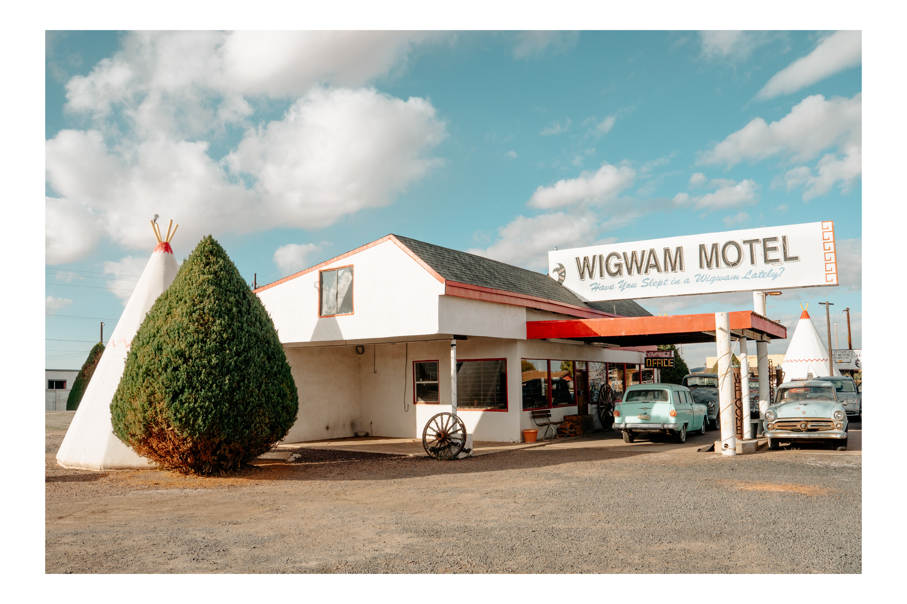
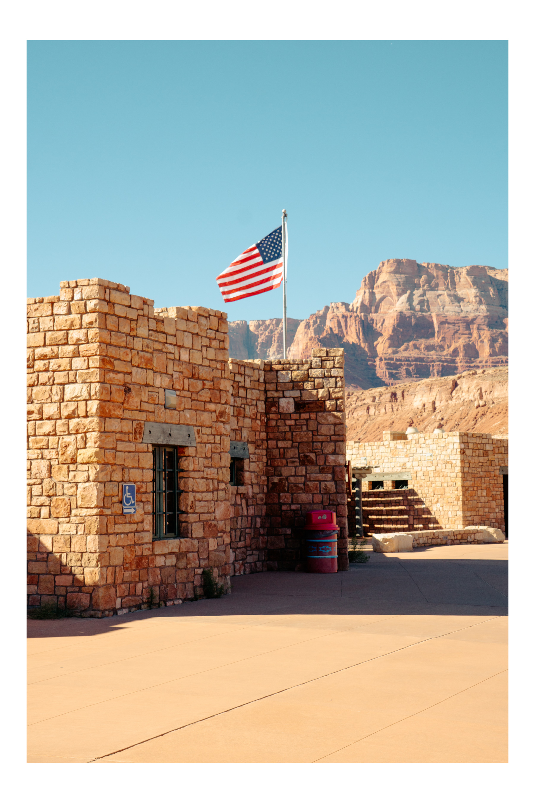
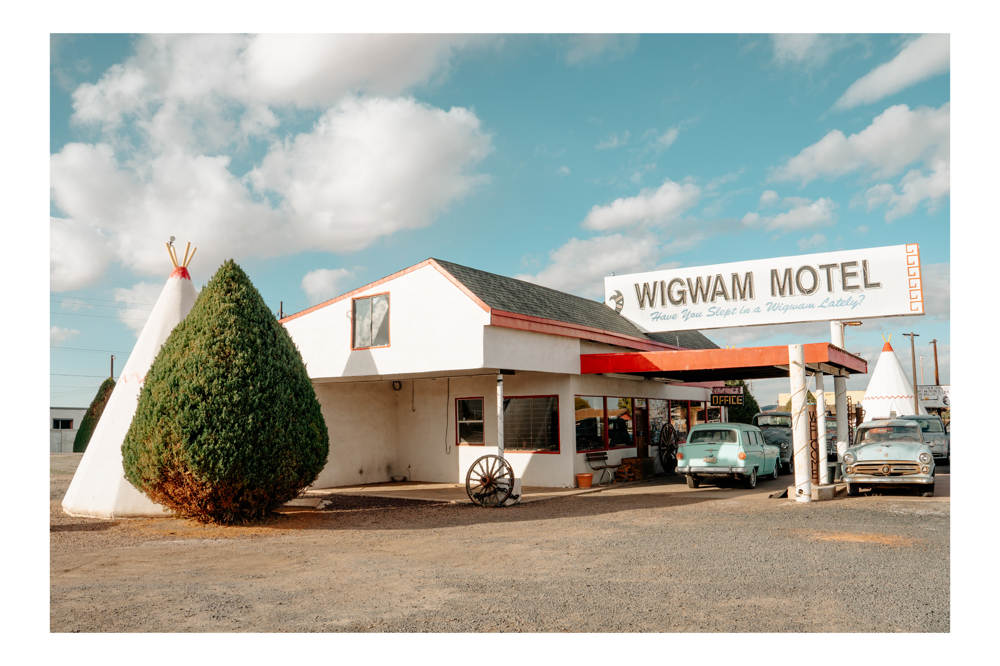
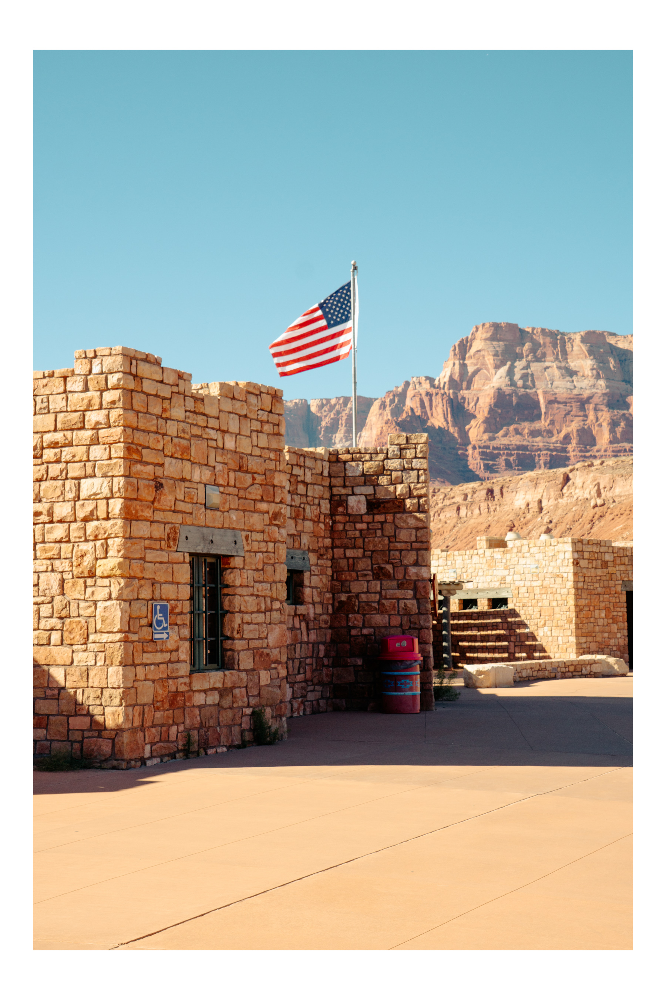

Let the record show I finished this problem first, I just typo'd the final flag. Heartbreaking. Spoilers ahead for anything involving the github.com/OWoodfl1nt or twitter @OWoodflint
To begin the challenge, we are granted an edit screenshot of the Windows XP default background. The image itself looks boring, but after lifting up the hood of the image's metadata with the site exif.tools, we reveal a plethora of information.
We're given a copyright holder, "Owoodflint", a latitude and longitude, the encoding process, and a few other less helpful bits.
The flags are the following info: The users name, his city, his BSSID, his SSID of the WAP, his email address, his password, and name.
Initially, it looked like the city was a gimme, as the screenshot has coordinates baked in. The coordinates were in a weird format, which pointed me to a big city.
The name of the city missed, then the specific neighborhood, which also missed. I tried entering the coordinates in a different format, which led me to a provincial area.
This lead me to believe that I was in the completely wrong city before, and guessed the nearest big city to the second coordinates. Also a miss. Time to move on.
The copyright holder of the image was "Owoodflint". Let's Google that. Bingo! We got a twitter, wordpress site, and github, all at the top of the search.
Figuring they have to be at the top of the SEO due to the CTF, I opened all of them. The twitter had a tweet of his BSSID, easy flag. We then needed the city that the target was in, and we had the BSSID.
I entered the BSSID into wigle.net, a site that maps all the networks across the world. Wigle did have that BSSID mapped, to a network in London, and had the BSSID. Two more questions down!
The email address was another easy hit, included in his about me page on github. Finally, his WordPress page had the name of the city he was on vacation to, another flag down.
Finding his password had me stumped. I initially started searching for active vulnerabilities in WordPress, as I knew that the site was a treasure trove of massive security weaknesses.
I then realized that was probably diving way too deep into this question, and I should start closer to the surface. I scoured his GitHub, going through the change history to the page, wondering if he would have posted it in plaintext in the past.
No luck. I then perused his twitter again, wondering if we would find any easy hints with past tweets or info in the bio. A miss again. I returned to google with the "OWoodflint" name, and clicked through a few pages
I hit the flag when his WordPress page came up, under a different index. The initial info of the link on Google had a sentence that I didn't remember seeing before, something related to pennies. I copied the text, opened the wordpress page, and searched for it in the source of the page.
It pulled up! I copied the entire string, pasted it as a flag, and it hit. What a silly problem lol.
 





 


